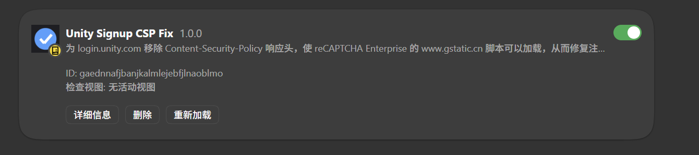

一个「看起来是用户自己填错了」的失败，最终被还原成一条可验证的服务端配置缺陷： 页面 CSP 白名单漏了中国区 CDN 域名，验证码脚本根本没被浏览器放行。 本项目给出完整证据链、一个只有 2 条规则、0 行 JS 的修复扩展，以及一套零依赖的自动判定脚本。
在 Unity 的账号注册页 https://login.unity.com/zh/sign-up 填完表单、点击「创建帐户」，
约 4 秒后必然出现一行提示：验证码无效，请重试。
| 维度 | 观察结果 |
|---|---|
| 触发条件 | 任意邮箱、任意合规密码，稳定复现 |
| 提示文案 | 「验证码无效，请重试」——把矛头指向用户没有通过人机校验 |
| 网络面板 | 表单提交 POST /zh/sign-up 返回 200，错误只在响应体里 |
| 验证码对象 | window.grecaptcha 存在，但 grecaptcha.enterprise.execute 是 undefined |
| 控制台 | 一条红色 CSP 违规，且指向验证码的脚本地址 |
注意第一行与第三行的反差：提交在 HTTP 层是「成功」的。只盯着状态码排查，会一路得出错误结论—— 这正是这类故障最容易带偏方向的地方。
Refused to load the script
'https://www.gstatic.cn/recaptcha/releases/NhfdZHzre166o-vFZrWsq3yu/recaptcha__zh_cn.js'
because it violates the following Content Security Policy directive:
script-src 'self' 'unsafe-eval' 'unsafe-inline'
https://cdn.cookielaw.org/ https://*.unity.com/
https://www.recaptcha.net/recaptcha/ https://*.googletagmanager.com/
https://www.gstatic.com/recaptcha/ https://www.clarity.ms ...
DevTools 的网络面板给出同一结论的另一种表述：该请求 blockedReason: "csp"，
即请求根本没有发出去，是浏览器在执行安全策略时自己拦下的。
| # | 环节 | 发生了什么 |
|---|---|---|
| 1 | 加载器 | recaptcha.net/recaptcha/enterprise.js 返回 200，但内容只是一段桩代码 |
| 2 | 桩代码 | 真正的 payload 被写死在 www.gstatic.cn/recaptcha/…/recaptcha__zh_cn.js |
| 3 | CSP 白名单 | 只允许 recaptcha.net 与 gstatic.com，没有 gstatic.cn |
| 4 | 浏览器拒绝 | 请求在发出之前就被拦下：blockedReason: "csp" |
| 5 | 无 token | grecaptcha.enterprise.execute 未挂载，服务端回「验证码无效，请重试」 |
recaptcha__en.js，域名仍然是 www.gstatic.cn——所以「换成英文页面」这条常见建议无效。
用 CDP 的 Page.setBypassCSP 仅对该页临时放行 CSP，其余条件完全不变，重跑同一条流程：
| 检查项 | 放行前 | 放行后 |
|---|---|---|
gstatic.cn/…/recaptcha__zh_cn.js | blockedReason: csp | 200 |
/recaptcha/enterprise/anchor | 未发出 | 200 |
/recaptcha/enterprise/bframe | 未发出 | 200 |
grecaptcha.enterprise.execute | undefined | function |
| 「验证码无效，请重试」 | 出现 | 不再出现 |
验证码的失败文案天然把责任推给用户，用户于是反复重试、换邮箱、清缓存，实际永远不会成功； 而对该站点而言，这是中国区用户注册链路的一道静默断点。问题不在用户，在一条漏写的白名单。
修复不需要注入脚本、不需要读取页面：只在两个 Unity 域上移除 CSP 响应头， 让本来合法的验证码脚本可以被加载。
| # | 匹配范围 | 动作 |
|---|---|---|
| 1 | ||login.unity.com/ | 移除 content-security-policy、content-security-policy-report-only、x-content-security-policy |
| 2 | ||api.unity.com/ | 移除前两个同名响应头 |
manifest.json 核对）| 能力 | 是否具备 |
|---|---|
| 修改响应头 | 是（仅上述两个域） |
| 注入内容脚本 / 读取页面 | 否 |
tabs / webRequest / cookies | 否 |
| 联网 / 数据上报 | 否 |

验证不靠肉眼截图，而靠脚本。verify/verify.mjs 用 Chrome DevTools Protocol 直接观察
真实网络与控制台，输出判定 load 或 block，并支持 --expect 断言接进 CI。
# 起一个带扩展的独立浏览器实例（不碰日常配置） powershell -ExecutionPolicy Bypass -File verify/run.ps1 # 另开终端验证 node verify/verify.mjs --port 9333 --expect load
================ 观测结果 ================
最终 URL https://login.unity.com/zh/sign-up
主文档 CSP nonce+strict-dynamic
gstatic 验证码脚本 200 https://www.gstatic.cn/recaptcha/releases/…
anchor / bframe 200 / 200
grecaptcha.enterprise.execute true
CSP 违规条数 0
==========================================
判定：验证码可正常加载（无需修复，或修复已生效）
PASS —— 与 --expect load 一致
| 检查项 | 旧策略 不装扩展 | 旧策略 装扩展 | 新策略 不装扩展 |
|---|---|---|---|
| 主文档 CSP | host-allowlist | 不存在 | nonce+strict-dynamic |
gstatic.cn 验证码脚本 | blocked: csp | 200 | 200 |
| anchor / bframe | 未发出 | 200 / 200 | 200 / 200 |
execute | false | true | true |
| CSP 违规 | 1 条 | 0 | 0 |
| 判定 | block | load | load |
--expect load 会立刻失败——这是一条真正意义上的回归探针。
2026-10-29 用同一套脚本复测，问题不再复现。差别落在 CSP 策略本身：
| 2026-10-24（旧策略） | 2026-10-29（新策略） | |
|---|---|---|
script-src | 'self' 'unsafe-eval' 'unsafe-inline' + 主机白名单 | 'self' 'nonce-…' 'strict-dynamic' + 主机白名单 |
gstatic.cn 脚本 | 被 CSP 拦截 | 200 |
execute | undefined | function |
原因很直接：一旦策略里出现 'strict-dynamic'，主机白名单对脚本不再起限制作用，
由已信任脚本（带 nonce 的 Next.js 主包）动态插入的 gstatic.cn 脚本会被放行。
两种策略在灰度期可能并存，同一 URL 不同时间可能拿到不同的那一份。
load / block 两种判定，
正是为了在策略并存或回退时仍能给出确定答案。
一个排障作品的价值，不在于「我修好了」，而在于每个结论都注明它成立于哪一天、依据是什么—— 包括结论失效的那一天。
// 2026-10-24 —— 主机白名单生效，gstatic.cn 不在名单里 content-security-policy: script-src 'self' 'unsafe-eval' 'unsafe-inline' https://www.recaptcha.net/recaptcha/ https://www.gstatic.com/recaptcha/ … // 2026-10-29 —— 加了 nonce + strict-dynamic，白名单不再约束脚本 content-security-policy: script-src 'self' 'nonce-…' 'strict-dynamic' https://www.recaptcha.net/recaptcha/ https://www.gstatic.com/recaptcha/ …
--expect load 这条会失败的断言。
仓库里 verify/ 可独立于扩展使用：任何一次「验证码加载不出来」的怀疑，
都可以先跑一次 verify.mjs 拿到确定答案，再决定要不要写补丁。
这也意味着，即使有朝一日扩展本身不再需要，工具与文档仍然成立。
| 材料 | 位置 |
|---|---|
| 完整可运行代码 | github.com/xiaokaisw/unity-csp-fix（extension / verify / docs / tools） |
| 作品介绍 PDF | 本文件 |
| 演示视频 | 见提交页视频链接（分镜脚本见 docs/演示视频脚本.md） |
# 1) 载入扩展：edge://extensions → 开发人员模式 → 加载解压缩的扩展 → extension/ git clone https://github.com/xiaokaisw/unity-csp-fix.git && cd unity-csp-fix # 2) 起一个带扩展的独立实例，并自动判定 powershell -ExecutionPolicy Bypass -File verify/run.ps1 node verify/verify.mjs --port 9333 --expect load # 对照：加 -NoExtension 再跑一次，比较两次输出